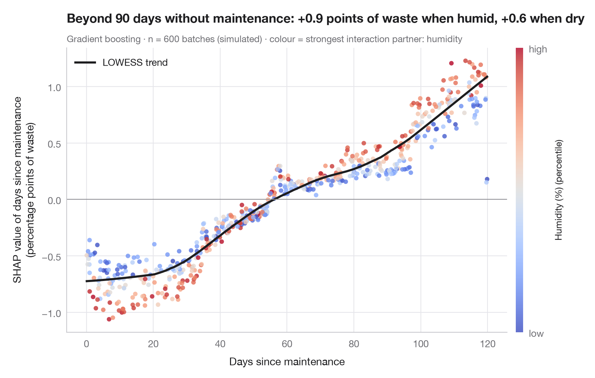

Graphique de dépendance SHAP
Comment les jours depuis la maintenance entrent dans le taux de rebut prédit de chaque lot, colorés selon le principal partenaire d'interaction, avec une tendance lissée.

Un graphique de dépendance SHAP se concentre sur une seule variable. Chaque point est un lot de production : l'axe horizontal donne la valeur de la variable, l'axe vertical sa valeur SHAP — sa contribution au rebut prédit de ce lot. La courbe de tendance (un lissage LOWESS) est proche d'une courbe de dépendance partielle, mais le nuage autour d'elle est informatif : à nombre égal de jours depuis la maintenance, les contributions diffèrent d'un lot à l'autre à cause des interactions avec d'autres variables.
La couleur montre la variable qui explique le mieux cette dispersion verticale, choisie ici comme celle dont les valeurs d'interaction SHAP avec les jours depuis la maintenance sont en moyenne les plus grandes (shap.TreeExplainer.shap_interaction_values). Le cadre est celui de Warin, d'Anglade et de Marcellis-Warin (2025, International Journal of Sustainable Engineering), qui combinent le partitionnement k-means et la science des données pour réduire les rebuts dans l'industrie manufacturière. Les données sont simulées à titre d'illustration et ne sont pas celles de l'article ni ses résultats : les mêmes n = 600 lots de production que dans la comparaison de modèles, construits pour qu'une machine usée produise plus de rebut quand l'atelier est humide. Le modèle est un gradient boosting ; le lissage vient de statsmodels.nonparametric.lowess.
Le code et le texte à l'intérieur des figures sont en anglais.
import matplotlib.pyplot as plt
import numpy as np
import pandas as pd
import shap
from sklearn.ensemble import GradientBoostingRegressor
from statsmodels.nonparametric.smoothers_lowess import lowess
# Simulated data, set in the context of Warin, d'Anglade & de Marcellis-Warin (2025) [warin2025waste]
# Data: 600 production batches; outcome = waste rate (% of material scrapped)
rng = np.random.default_rng(2025)
n = 600
names = {"speed": "Machine speed (units/min)", "temperature": "Temperature (°C)",
"humidity": "Humidity (%)", "experience": "Operator experience (years)",
"maintenance": "Days since maintenance", "grade": "Material grade (1 = best)",
"batch_size": "Batch size (kg)"}
X = pd.DataFrame({"speed": rng.uniform(80, 160, n), "temperature": rng.uniform(195, 225, n),
"humidity": rng.uniform(30, 75, n), "experience": rng.gamma(2, 4, n),
"maintenance": rng.uniform(0, 120, n), "grade": rng.integers(1, 4, n),
"batch_size": rng.uniform(200, 1000, n)}) # batch size has no effect
y = (2 + 0.002 * np.clip(X.speed - 110, 0, None) ** 2 # waste climbs above 110 units/min
+ 0.025 * (X.temperature - 210) ** 2 # U-shape around the 210 °C set point
+ 3 * np.exp(-X.experience / 3) # novices waste more, gains fade
+ 4 * (X.humidity - 30) / 45 * X.maintenance / 120 # humidity hurts worn machines most
+ 0.6 * (X.grade - 1) + rng.normal(0, 0.7, n))
model = GradientBoostingRegressor(learning_rate=0.05, n_estimators=300, max_depth=2,
subsample=0.8, random_state=0).fit(X, y)
explainer = shap.TreeExplainer(model)
sv = explainer.shap_values(X)
inter = explainer.shap_interaction_values(X) # (batches, features, features)
f = list(X.columns).index("maintenance")
strength = np.abs(inter[:, f, :]).mean(axis=0)
strength[f] = 0
partner = int(np.argmax(strength)) # strongest interaction partner
x, s = X.iloc[:, f].to_numpy(), sv[:, f]
col = X.iloc[:, partner].rank(pct=True).to_numpy()
trend = lowess(s, x, frac=0.35)
fig, ax = plt.subplots(figsize=(8, 5.2))
sc = ax.scatter(x, s, c=col, cmap="coolwarm", s=22, alpha=0.8, lw=0, vmin=0, vmax=1)
ax.plot(trend[:, 0], trend[:, 1], color="#1d1d1f", lw=2.2, label="LOWESS trend")
ax.axhline(0, color="#8E8E93", lw=0.8)
ax.set_xlabel(names["maintenance"])
ax.set_ylabel("SHAP value of days since maintenance\n(percentage points of waste)")
ax.grid(axis="x")
ax.legend(loc="upper left")
cb = fig.colorbar(sc, ax=ax, pad=0.02, aspect=40, ticks=[0, 1])
cb.ax.set_yticklabels(["low", "high"])
cb.set_label(f"{names[X.columns[partner]]} (percentile)", fontsize=9.5)
cb.outline.set_visible(False)
old = x > 90
wet, dry = s[old & (col > 2 / 3)].mean(), s[old & (col < 1 / 3)].mean()
ax.set_title(f"Beyond 90 days without maintenance: {wet:+.1f} points of waste when humid, "
f"{dry:+.1f} when dry", pad=26)
ax.text(0, 1.02, f"Gradient boosting · n = {n} batches (simulated) · colour = strongest interaction "
f"partner: {names[X.columns[partner]].split(' (')[0].lower()}", transform=ax.transAxes, fontsize=9.5, color="#6E6E73")
plt.show()
Les figures utilisent le style PyStatlas (facultatif) : ajoutez plt.style.use("pystatlas.mplstyle") pour obtenir exactement le même rendu.
Source des données
- Simulated data. Simulated data with a fixed random seed, created for this example.
No real respondents, documents or measurements: the numbers only illustrate how the chart and its statistics work. - Warin, d'Anglade & de Marcellis-Warin (2025), data science for waste reduction in manufacturing. Warin, T., d'Anglade, P. M., & de Marcellis-Warin, N. (2025). Optimising industrial efficiency: Integrating K-means clustering and data science for sustainable manufacturing and waste reduction. International Journal of Sustainable Engineering, 18(1), 2527300. https://doi.org/10.1080/19397038.2025.2527300
The example is set in the context of this paper; unless its description says otherwise, the numbers are simulated and are not the paper's data or results.
Les exemples illustrent des méthodes statistiques. Leurs chiffres sont simulés, sauf mention contraire dans l'entrée, et leurs titres décrivent ce que chaque figure montre dans ces données simulées — ni les résultats des articles cités, ni la position de l'auteur sur la question de fond. Pour les résultats, le contexte et les données, reportez-vous aux articles cités ici.
Comment citer
PyStatlas est créé et maintenu par Thierry Warin. S'il vous a été utile dans vos travaux, merci de le citer.
Warin, T. (2026). SHAP dependence plot. In PyStatlas: A Python Gallery of Statistical Graphics for the Social Sciences (Version 1.1.0) [Computer software]. https://warint.github.io/pystatlas/machine-learning/shap-dependence/
@misc{warin2026statlas,
author = {Warin, Thierry},
title = {PyStatlas: A Python Gallery of Statistical Graphics for the Social Sciences},
year = {2026},
version = {1.1.0},
howpublished = {\url{https://warint.github.io/pystatlas/}},
note = {Source code: https://github.com/warint/pystatlas}
}Plus dans Apprentissage automatique

Matrice de confusion avec indicateurs
Dans quelle mesure un classifieur range des tweets dans les thèmes environnemental, social et de gouvernance — matrice de confusion 3 × 3 hors échantillon, avec intervalles bootstrap pour les indicateurs.
yardstick::conf_mat() + autoplot()
Courbes précision–rappel
Courbes précision–rappel hors échantillon de deux classifieurs prédisant quels utilisateurs de Facebook partagent de fausses nouvelles sur la COVID-19, avec précision moyenne et référence sans compétence.
yardstick::pr_curve() + autoplot()
Courbe d'apprentissage
Exactitude d'entraînement et en validation croisée à mesure que l'échantillon d'entraînement grandit, pour deux modèles prédisant quels utilisateurs de Facebook partagent de fausses nouvelles sur la COVID-19.
caret::learning_curve_dat() + ggplot()